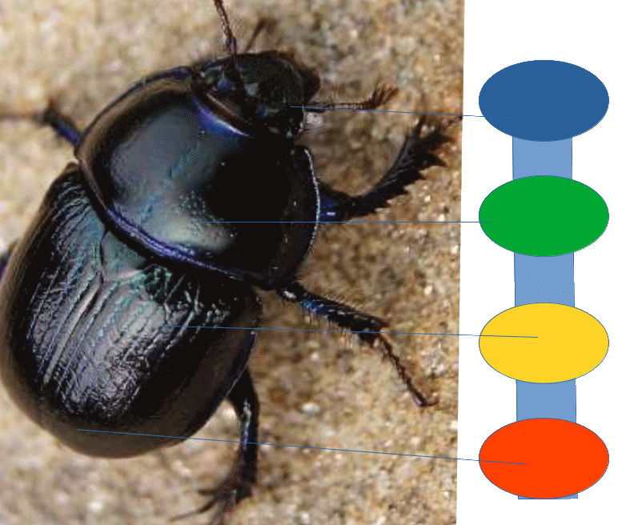

<div class="content">
<div class="scroller">
<h2>Скарабей</h2>

<p style="font-size: 1rem; text-align: left"> Данный ифрит
                  является симбионтом("Чипом" встраиваемым в ментальное тело) и
                  имеет четыре центра: </p>
<p> - центр интеллекта(синий) в голове, </p>
<p> -центр ощущений(в верхней части(зеленый), </p>
<p> -центр действия в средней части(желтый) и </p>
<p> - центр физического тела(красный). </p>
<p> Верхняя чакра(синяя) Скарабея связывается с управляющим
                  ифритом. </p>


<p> Интерфейс задается через следующие мандалы: </p>
<p> 1. Сам Жук-как вид жизни, </p>
<p> 2. Сознание жука-как точка зацепления для управляющего
                  ифрита </p>
<p> 3. Чакры Скарабея - как интерфейс с чакрами человека для
                  выполнения соответствующих функций. На каждую мандалу чакры
                  Скарабея накладываются мандалы соответствующих функций. </p>
<p> Таким образом,каждая функция является информационным блоком,
                  который через интерфейс Скарабея переносится в тонкое тело
                  человека, чем обеспечивается выполнение функции. </p>
</div>
</div>

